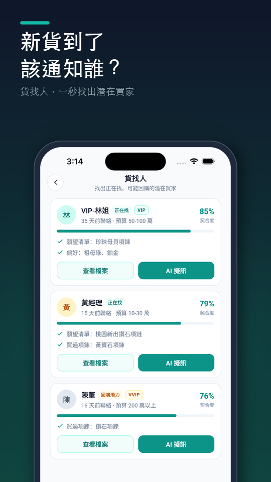

貨找人教學：新貨到了，馬上找出該通知的客人
情境：店裡剛到一條祖母綠項鍊。你隱約記得有幾位客人提過喜歡祖母綠，但是誰？預算多少？上次是誰說女兒要結婚？翻聊天紀錄找了半小時還是不確定。
用貨找人，拍一張商品照，熟客簿會從你記過的願望清單、購買紀錄和偏好，列出最可能有興趣的客人，還告訴你為什麼。

操作步驟
打開貨找人
在看板點 貨找人。
拍照，讓 AI 帶入條件
在 拍照搜尋 區塊點相機按鈕直接拍，或點 ＋ 從相簿選照片。AI 辨識後會自動帶入品項類別與條件（例如寶石、材質），並顯示 已帶入：…。
或自己選條件
也可以不拍照：在 品項類別 選一個類別，填寫寶石、材質等條件，以及 預算下限、預算上限，還有其他想補充的可以寫在 補充條件（選填）。
開始匹配
點 開始匹配。結果會依 正在找、回購潛力、偏好吻合 排序，每位客人都有契合度和原因，例如「願望清單：祖母綠墜子」「預算區間可能不合」。
一鍵寫新品通知
在客人卡片點 AI 擬訊，會自動帶入「新品到貨」情境和這次的條件，寫好專屬這位客人的通知；想先看客人資料就點 查看檔案。
小技巧
- 平常記得越清楚，貨找人越準：語音速記時講出客人想找的東西與預算，就會進願望清單，之後新貨到了第一個被找出來。
- 預算的單位（萬、千、元）可以在 設定 → 行業與標籤 裡調整。
常見問題
- 貨找人是怎麼判斷客人會有興趣的？
- 依三種線索：願望清單或詢過價還沒成交的（正在找）、買過同類商品的（回購潛力）、偏好的寶石材質等條件吻合的（偏好吻合），並把原因列在每位客人卡片上。
- 一定要拍照嗎？
- 不用。可以直接選品項類別、填條件和預算，再按「開始匹配」。
- 找不到任何客人怎麼辦？
- 試著放寬條件，例如不填預算或少選幾個條件；也代表這類商品還沒有客人留下紀錄，可以從今天開始多記願望清單與偏好。
- 通知訊息可以一次發給所有人嗎？
- 建議一位一位發：點每位客人的「AI 擬訊」，訊息會提到這位客人自己的需求，比群發更有效，也比較不會打擾。
想直接試試看？
熟客簿是給第一線銷售顧問用的客戶管理 App：講 30 秒記好客人、生日回訪自動提醒、新貨到了幫你找出該通知誰。免費試用 14 天，不用綁信用卡。